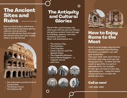
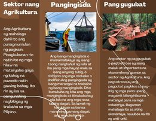

- Ang agrikultura ay mahalaga dahil ito ang nagbibigay ng pagkain sa ating mga tao

- Ang Roma ay kilala sa kasaysayan
lungsod na may lahat ng pinakadakilang kaluwalhatian nito,
kultura, at istruktura.
- Ang Roma ay parang isang magandang lungsod kung saan makikita at masasaksihan mo pa rin ang maluwalhating sinaunang panahon sa pamamagitan ng mga gusali, palasyo, simbahan, museo, at marami pa. Ang mga mast-visit na destinasyon ay:
Ang Vatican City

- Ang Agrikultura ay mahalaga dahil ito ang punagmumulan ng pagkain. Pinagkukunan rin natin Ito ng mga hilaw na materyales gaya ng kahoy na puwede natin gawing bahay. Ito rin ay isa sa pangunahing
nagbibigay ng trabaho sa mga Pilipino.
- Ang isang mangingisda o mamamalakaya ay isang taong nanghuhuli ng isda at iba pang mga hayop mula sa isang anyong tubig, o tinitipon ang mga molusko o shellfish.Ang pangingisda ay isang marangal na trabaho ng isang mangingisda. Dito kumukuha ng kita ang mga mangingisda at ikinabubuhay nila lalo na ang mga nasa tabing dagat. Sa lawak ng katubigan sa bansa maraming yamang dagat ang makukuhanito.
- Ang sector ng paggugubat o pagtrotroso ay isang malaki at importante na ekonomikong gawain sa sector ng Agrikultura. Ang pagtotroso ay ang pagputol, pagkilos at pag- ibig ng mga puno upang magamit bilang hilaw na materyal para sa mga industriya. Bagaman mahalaga ito sa ating ekonomiya, nauubos na ito ng unti-unti